五子剑系列讲座之五【五子棋初级蒲月】
#1 五子剑系列讲座之五【五子棋初级蒲月】 作者：有志青年 发表时间：2007-12-10 22:26:48
注：五子剑五子棋系列讲座教程出自掌棋盟论坛，版权归原作者本人及掌棋盟论坛所有，未经许可，请勿私自转载。爱五子棋网站已获授权。
下棋这几年，飘飘零零的真正踏实在下棋的时间并不多，利用空闲的几天写下个人的一些经
验，希望可以对棋友有所帮助！
我认为下棋最重要的是态度和方法，你对五子棋的热爱程度以及学棋时所用的方法是提高
的关键！
阅读的顺序为：
五子棋初级→五子棋初级花月→五子棋初级蒲月→五子棋初级习题→
五子棋中级→五子棋中级云雨月→五子棋中级寒星→五子棋中级银月→五子棋中级习题→
五子棋ＶＣＦ习题集→五子棋高级
所有截图画面是ＬＩＢ、五子妙手３.０、ＱＱ游戏五子棋单机版能有如此多的人爱好
五子棋是最令人高兴的事，如此多的人为了同一种游戏来交流甚至痴迷！
感谢所有下五子棋的朋友，祝大家笑口常开、一生平安！
棋友：五子剑
#2 Re:五子剑系列讲座之【五子棋初级蒲月】 作者：有志青年 发表时间：2007-12-10 22:33:04
现在我们一起来看看黑棋另一种必胜开局，蒲月开局。
蒲月开局虽然也是同花月一样的必胜局，但是在白强防的一些变化上，要比花月难杀的多，白反攻的力量强大，黑走错一步输赢可能就会逆转。
同时蒲月局没有象花月那样有大量的外围优势，所以黑方在进攻时手段非常犀利，充分的体现出了点线的连接工夫！
如果前面你已经熟练掌握了花月开局，那蒲月局则可以让你学到更为精确的算杀技巧，同时使你在实战时思维敏捷。
蒲月中的棋型知识也有许多，这个也是学习的重点。
下面我们就一起来看看蒲月，如下图：
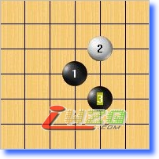
#3 Re:五子剑系列讲座之【五子棋初级蒲月】 作者：有志青年 发表时间：2007-12-10 22:42:25
蒲月局这里主要介绍白４的最强防守，其他的防点黑棋都比较好杀，看下图：
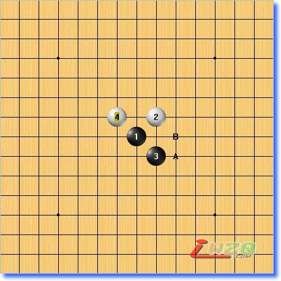
白4手为最强防守，黑棋两打在A/B点，在介绍之前，我们先看看另一个变化！
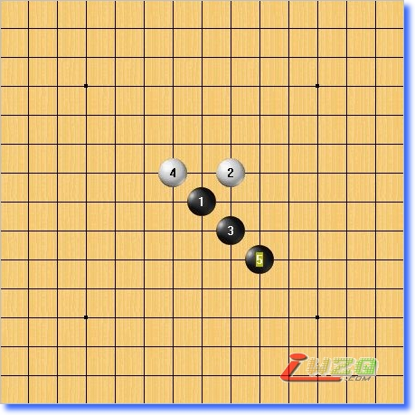
5手在下面形成一个眠三，这种走法我们在花月开局中已经学过！
无论在下面成角或者是连二，都有许多的一子成多二的点，同时棋型非常好！
大家可以尝试着去防守然后用黑攻，然后就会看出这个和花月的强势简直一出无二！
在五子棋职业规则刚刚进入中国时，这个5手是当时非常流行的走法，在比赛中更是所向披靡！
后来早期的老师们反复思索，终于找到了破解之法！
6手的出现堪称经典！
白棋精妙的一手棋使局势完全逆转！此时黑棋无论怎么行棋，要么被抓禁手，要么反被先杀！
这个变化体现出了一种下棋方式，当对方的优势实在太大时，大到我们已经无法再取防守的时候，可能我们将被迫去反攻抢先！
在下棋时我们要时刻具备争先意识，无论执黑、白任何一方，先手通常在很多局面中是胜败的关键！
无论最后你的棋风走向进攻或是防守，初级阶段的争先意识是必须培养的！
这个5手大家可以仔细拆拆！
#4 Re:五子剑系列讲座之【五子棋初级蒲月】 作者：有志青年 发表时间：2007-12-10 22:51:13
现在我们来看看蒲月局的正确打点，如下图：
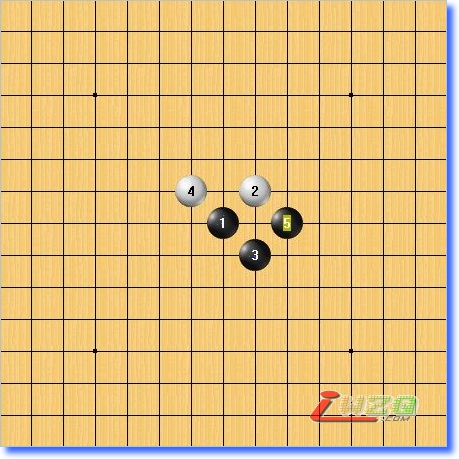
先来学习这个打点
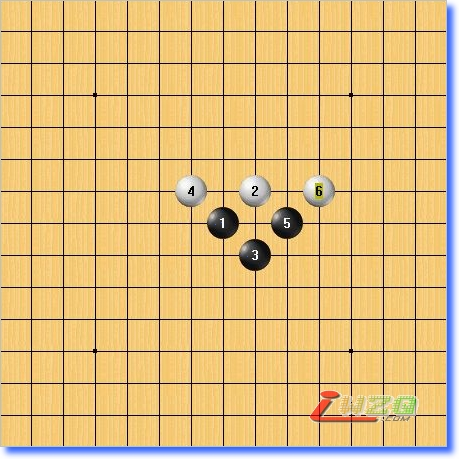
6手斜上防守，形成一个大眠三，这里在初学者比较贪攻冒进而计算力又不足的情况下相当有效！
我们继续看！
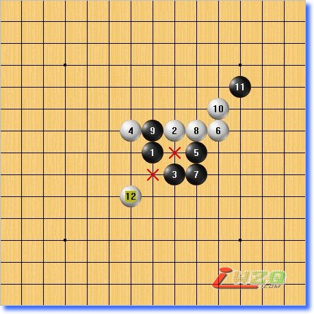
7手贪攻，抢先占据做棋要点，然而被白棋出逼双禁的妙手！
7手的思路并没有问题，欠缺的可能是我们的计算力或者下棋的心态问题——太急了！
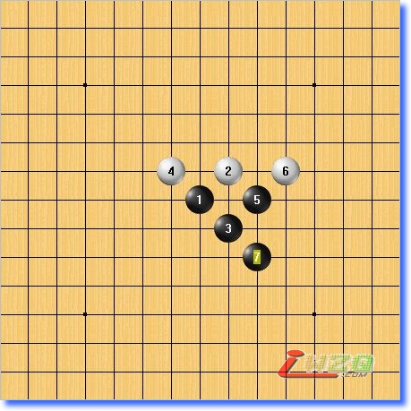
7手应该向下一格做棋，如此白棋抓禁的手段就不成立了！
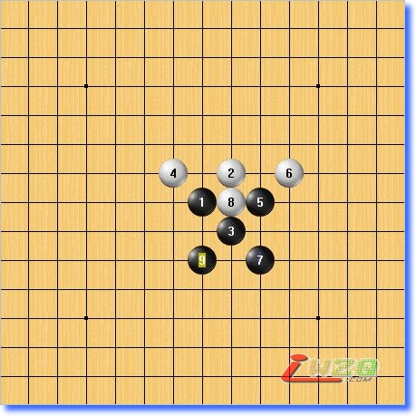
8手防这里，9手再做一个眠三！
这个形状通寒星开局的雁阵！
在中级寒星上我们会详细介绍！
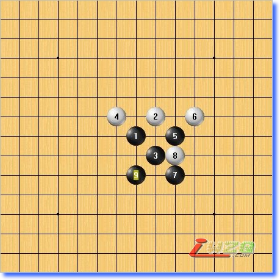
8手防这里，日本连珠定石上推荐的点是这个9手，应该是想通雁阵的棋型，后来联系穷尽时发现有一路变化怎么都杀不出来！
大家也可以仔细拆拆这个局面！
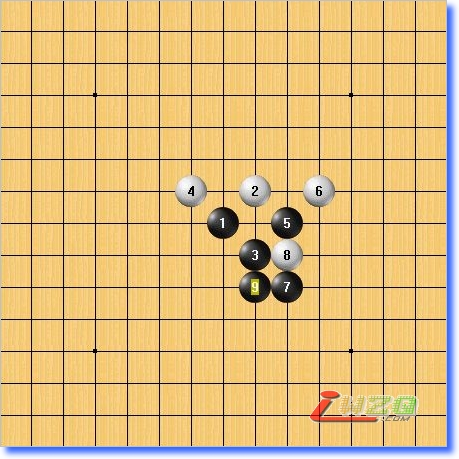
9应该在这里做棋，则轻松取胜！
#5 Re:五子剑系列讲座之【五子棋初级蒲月】 作者：有志青年 发表时间：2007-12-10 22:58:09
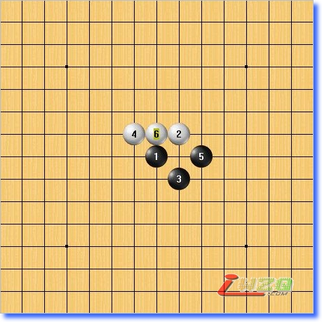
6手活三？
这种走法在初学者中很多，属于见二就活三的类型！
这种下棋走法是坚决不提倡的，我们看后面！
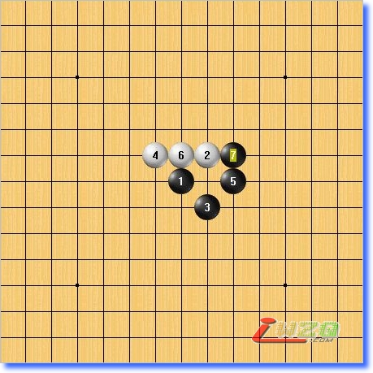
来看现在的局面！
6手白活三，7手右当，7手和5手形成一个新的活二连接！
再看白得到什么，一个眠三，可以控制F9和E9两个点！
黑棋很明显的在右边和下面形成了巨大的优势！
所以说6手是在帮对方做棋！
在自己没有后续进攻手段的情况下，请切记懂得保留变化！没必要的时候不要随便活三！你不活三，即可控制范围内好几个点都可以活三！除非局势需要，否则请保留变化！
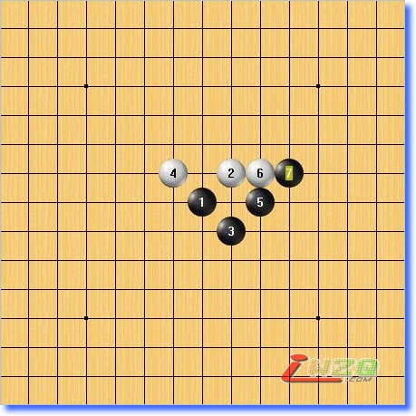
6手跳三与活三属于一种类型
#6 Re:五子剑系列讲座之【五子棋初级蒲月】 作者：有志青年 发表时间：2007-12-10 23:01:38
下面看一组６手，如下图：
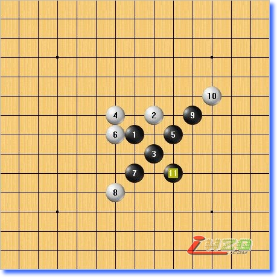
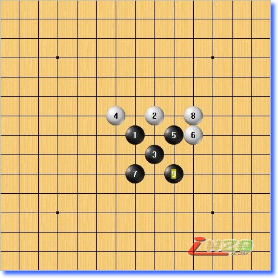
可以看到黑这个打点很容易走出这个棋型，仔细拆拆这种棋对计算力的提高很有帮助！
#7 Re:五子剑系列讲座之【五子棋初级蒲月】 作者：有志青年 发表时间：2007-12-10 23:12:37
我们继续来看，如下图：
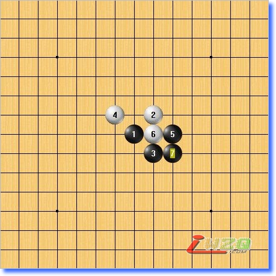
7手是黑棋的做棋要点，形成一个三角，这个在花月中已经讲过！
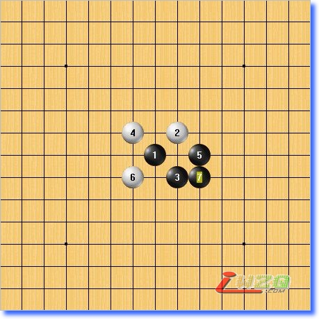
这个6手的变化白棋有一定的反攻手段，黑棋在进攻的时候需要想办法脱离白的控制范围！
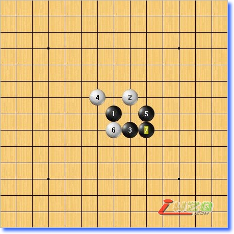
7手同样选择在要点做棋
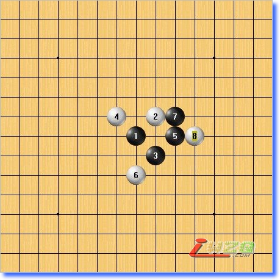
6手先当斜二，在下面增强防守力量！然后在K8这里，对右边形成防守力量！这是比较强的防守手段，意识相当好！
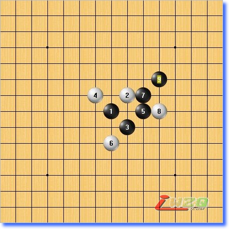
9手是关键！在通过计算后发现白8手在黑没有直接进攻胜的途径，所以在这里巧妙的做一手，妙手！
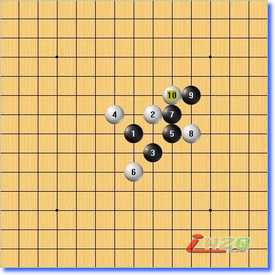
10手再强防，在上面形成防守力量！
6手、8手、10手分别在下方，右方、上方形成防守力量！这是非常好的防守意识！
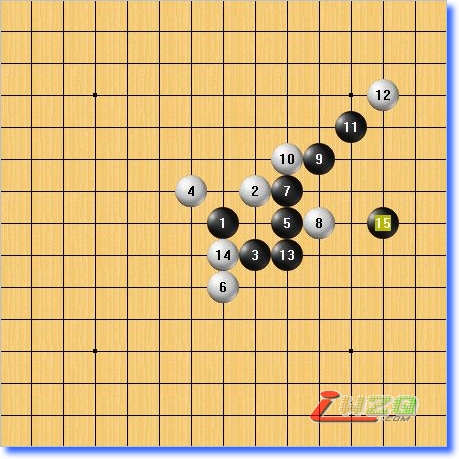
黑棋在这种情况下，利用先手优势向外围发展，白没有一个二，所以这里黑可以自由做棋，15手终于找到机会连接上下的优势成功取胜！15手的关键在于连接了黑棋上下的子力，同时在两个方向形成进攻手段！
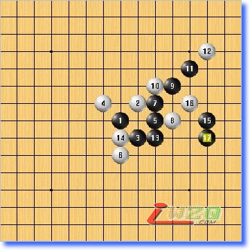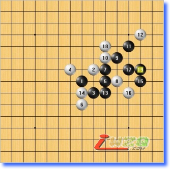
对于白16的不同防守，对应的进攻方式！
#8 Re:五子剑系列讲座之【五子棋初级蒲月】 作者：有志青年 发表时间：2007-12-10 23:15:52
现在来看看这个打点的白最强防守点：
6手直接占据黑棋的做棋要点，是这里的最强防守
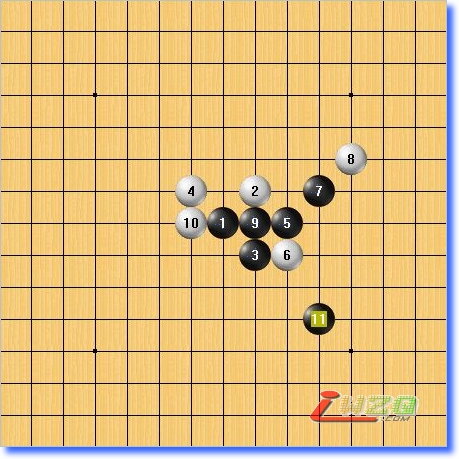
黑11手妙手，关键！
通过跳眠三做棋，吧黑棋下面和右面的优势连接起来！
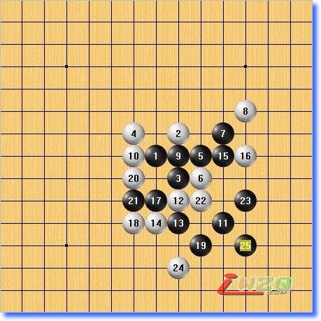
这是后面的一种演变，白棋的防守很强，然而黑的进攻更为犀利！
#9 Re:五子剑系列讲座之【五子棋初级蒲月】 作者：有志青年 发表时间：2007-12-10 23:26:47
现在来看黑的另一个打点，如下图：
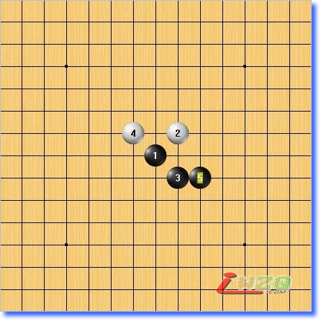
这个打点相对比刚才的要稍微弱一些，进攻起来计算需要更加精确！
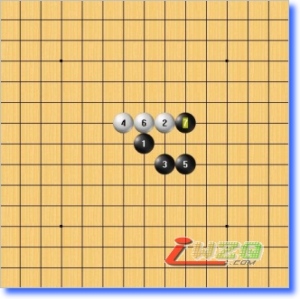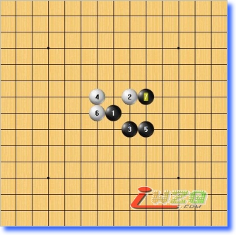
前面说过，这个活三不提倡
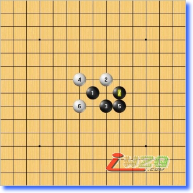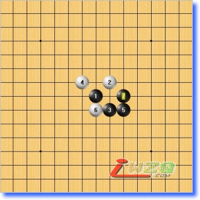
这个6手通前面另一个打点的变化！
上面这些6手虽然都比较弱，7手都很顺利的占据了做棋要点，但是仔细的练习这些点依然对我们的计算力的提高有帮助
现在来看看这个6手，6手当了7线的活二，7手似乎很自然的中间切断形成三个二！不过这里等于给了白喘息的机会！
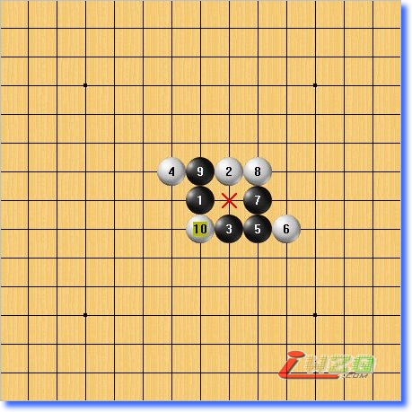
8手跳三防守，黑挡中间，白防守后黑无杀！
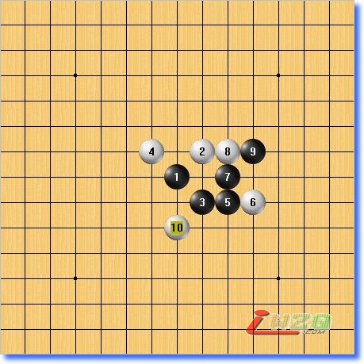
9手反先，10手下挡后黑同样是无杀局面！
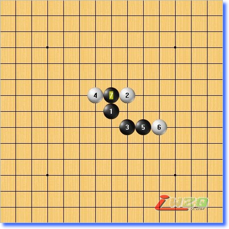
正确的7手应该是去阻断白这个活二，同时自己形成两个活二！如此白的斜活二无论怎样活三，黑都可以转换成大优局面而取得胜利！
#10 Re:五子剑系列讲座之【五子棋初级蒲月】 作者：有志青年 发表时间：2007-12-10 23:30:29
这里再看一个比较弱的６手点，如下图：
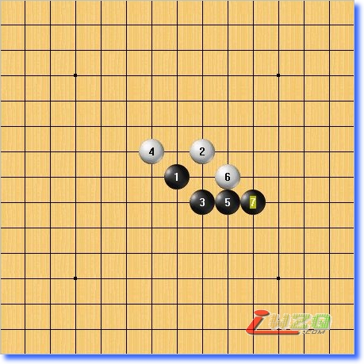
6手占据黑做棋要点，同时形成一个活二！不过黑活三防守后下面的空间全是黑的，所以黑棋可以简单进攻取胜！
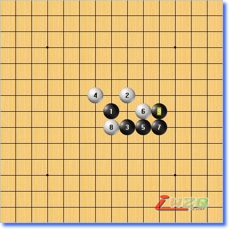
8手左挡，黑简单做个角成杀型！
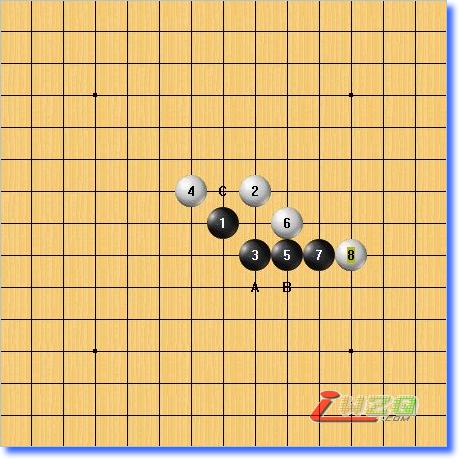
8手右挡后，黑可以在A/B做棋，也可以直接在C点做杀，都可以轻松取胜！
#11 Re:五子剑系列讲座之【五子棋初级蒲月】 作者：有志青年 发表时间：2007-12-10 23:35:47
现在我们来看看这个打点的白最强防守，如下图：
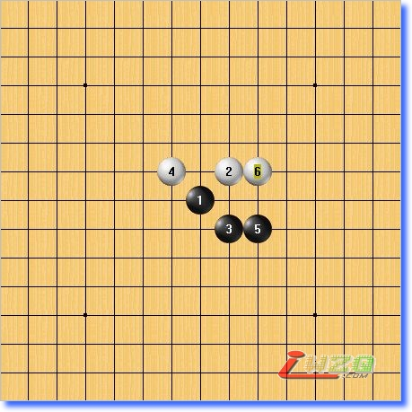
6手的最强防守点在这里的跳三，原因在于压制了黑棋的发展空间，这种防守方法在实战下棋时也会用到，需要一定的控棋能力！
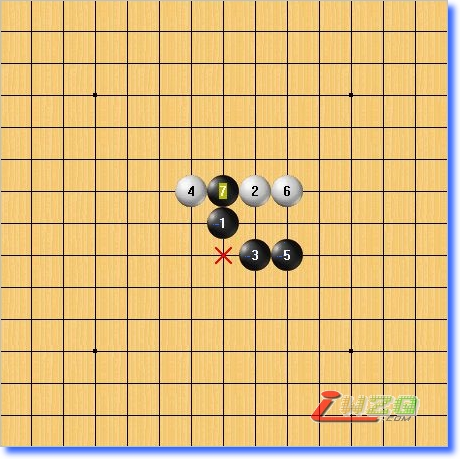
7手直接挡中间！
在下棋时白在防守的时候通常都会防守在黑33禁手点上，在没有抓禁的可能前提下，主要原因是黑利用33禁手来做棋可控制的点非常多，就以现在的这个33为例，我们看看黑有多少个点可以进攻！
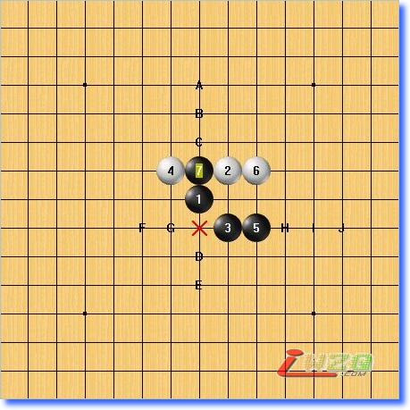
看，黑直接进攻的选点就有这么多，而如果要解禁的话还有其他的点，所以白在防守时直接防守在33点通常都会是强防！
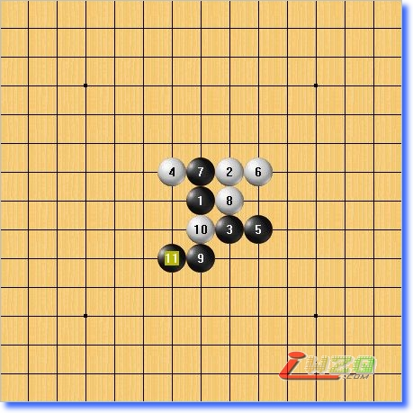
8手防守二的时候形成一个后手抓禁的活二，黑跳三解禁，同时在下方形成大优局面，胜定！
#12 Re:五子剑系列讲座之【五子棋初级蒲月】 作者：TaoWow 发表时间：2007-12-10 23:40:58
好帖!一定要多来学习学习.#13 Re:五子剑系列讲座之【五子棋初级蒲月】 作者：有志青年 发表时间：2007-12-10 23:45:16
好，我们继续看蒲月的最强防守，如下图：
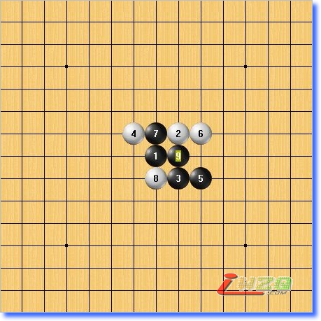
8手防在33点上为最强防守！9手活三切断白跳二联系！
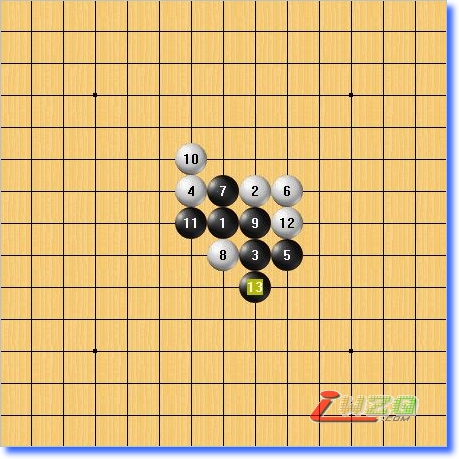
10手弱防，黑下面优势大！
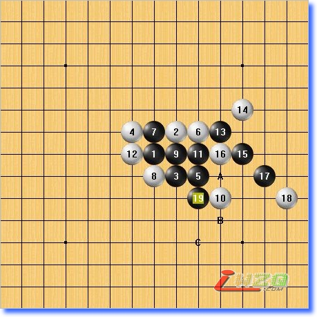
因为白棋的6手跳三和8手压制黑发展的空间，使得黑不得不采取强攻的手段，因此计算需要相当准确！
11手活二后12手弱防，19手时形成双杀！
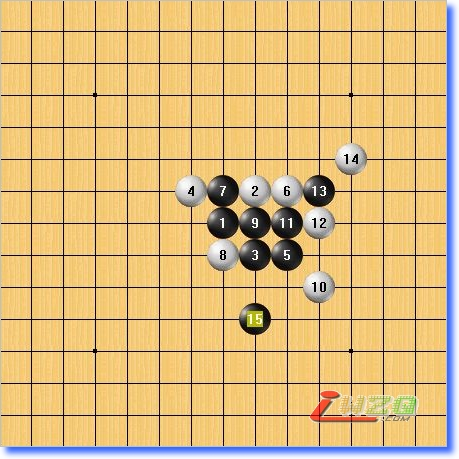
12手强防后，13手继续强攻，14手上防后黑终于在下面机会！
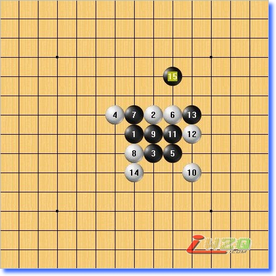
15手，关键！
14手后，在白一路强防后，眼看黑棋的进攻好像已经连续不下去了，突然神来一笔，将黑棋仅剩的攻击力联系起来！
要想走出这样的妙手需要我们对棋盘空间上的点线连接有非常开阔的眼界！
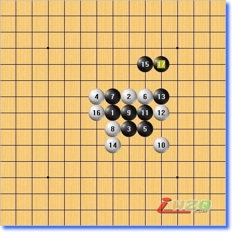
15手的妙处就在这里，和右边看似没有关系的眠三联系了起来，在上面形成了巧妙的连杀！
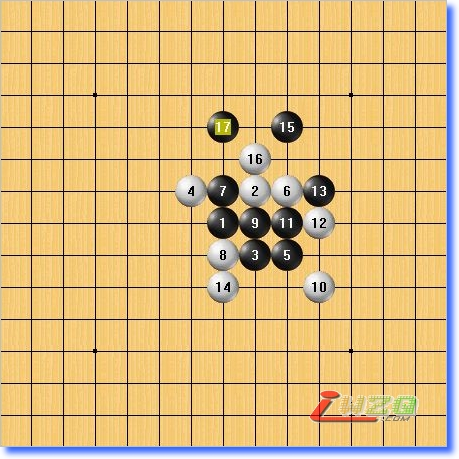
而15的好处也就在于假设这里白反先，黑防守后还可以形成VCF！
黑的VCF线路！
所以在15手的巧妙之作后，这里黑完成了强攻的收尾工作，非常精彩！
如果此时的你在实战中也可以自己走出这样的好棋，那你基本初级的水平已经通过了！
#14 Re:五子剑系列讲座之【五子棋初级蒲月】 作者：有志青年 发表时间：2007-12-10 23:46:21
到这里，初级的课程就算结束了！花月蒲月的学习基本可以学到初级水平所需要的所有东西，如果可以全部掌握，你在平时与人对奕时已经可以进行最基本的攻防策略！
正确的学习方法不需要我们了解太多的复杂的东西，只要把重点掌握好就可以，下棋时的感觉是非常重要的！
初级阶段主要就是培养对棋盘的感觉，没有这种感觉，你的热情就很难持续下去！
希望我们能共同成为五子棋的爱好者！加油！
#15 Re:五子剑系列讲座之五【五子棋初级蒲月】 作者：卡西莫多 发表时间：2008-6-6 13:58:33
写的很精彩呀，收益不少谢谢#16 Re:五子剑系列讲座之五【五子棋初级蒲月】 作者：汪洋孤舟 发表时间：2008-6-6 21:15:53
这种贴要强顶，绝不能沉…………#17 Re:五子剑系列讲座之五【五子棋初级蒲月】 作者：随心 发表时间：2008-8-27 14:23:19
大有可观，对我这个新手，大有帮助哦 ，顶起！#18 Re:五子剑系列讲座之五【五子棋初级蒲月】 作者：小猪学下棋 发表时间：2008-10-27 19:32:59
 坚持学习
坚持学习
#19 Re:五子剑系列讲座之五【五子棋初级蒲月】 作者：公主小妹 发表时间：2008-11-16 15:06:11
谢谢 讲的非常清楚.学起来比较容易.
#20 Re:五子剑系列讲座之五【五子棋初级蒲月】 作者：我爱你遥遥 发表时间：2009-2-14 12:30:09
受益非浅 非常感谢楼主
#21 Re:五子剑系列讲座之五【五子棋初级蒲月】 作者：来客沙丝 发表时间：2009-3-3 20:24:20
今天，又温习了一遍。好，多理解了不少。是我们黄埔一期的好教材。
#22 Re:五子剑系列讲座之五【五子棋初级蒲月】 作者：飞奔狂牛 发表时间：2009-6-8 1:11:27
弱弱地问一句：是不是所有的花月浦月肯定能胜啊？有好多我都拆不出来啊！#23 Re:五子剑系列讲座之五【五子棋初级蒲月】 作者：庄术河 发表时间：2009-6-24 10:49:09
不错
［ 黄药师 于 2009-6-24 22:04:48 时奖励此帖[金币加 20 威望加1］
#24 Re:五子剑系列讲座之五【五子棋初级蒲月】 作者：何帅 发表时间：2009-11-4 0:33:15
谢谢楼主~~~#25 Re:五子剑系列讲座之五【五子棋初级蒲月】 作者：最爱绿茶 发表时间：2009-11-9 14:38:16
 学习中……
学习中……
#26 Re:五子剑系列讲座之五【五子棋初级蒲月】 作者：波澜不惊 发表时间：2010-4-2 14:59:47
超级棒,超级顶!!!
#27 Re:五子剑系列讲座之五【五子棋初级蒲月】 作者：陌上 发表时间：2010-4-5 18:21:56
绝对支持！！
#28 Re:五子剑系列讲座之五【五子棋初级蒲月】 作者：蓝剑萧风 发表时间：2010-6-30 19:43:53
终于找到一套系统的学习方法了，谢谢LZ#29 Re:五子剑系列讲座之五【五子棋初级蒲月】 作者：新手小子 发表时间：2010-9-5 3:30:11
有没有视频讲解的？
#30 Re:五子剑系列讲座之五【五子棋初级蒲月】 作者：花骨朵 发表时间：2011-6-11 17:54:46
楼主很用心，非常详细。#31 Re:五子剑系列讲座之五【五子棋初级蒲月】 作者：董明 发表时间：2011-6-14 22:49:01
今天没法学完，明天接着学，很实用，谢谢老师的无私奉献
#32 Re:五子剑系列讲座之五【五子棋初级蒲月】 作者：新手李棋 发表时间：2011-12-12 11:16:28
受益非浅
#33 Re:五子剑系列讲座之五【五子棋初级蒲月】 作者：新手李棋 发表时间：2011-12-13 23:33:10
学习后自打一谱，但不太明白 白10的意图，请指点。
［此帖子已被 新手李棋 在 2011-12-13 23:35:21 编辑过］
#34 Re:五子剑系列讲座之五【五子棋初级蒲月】 作者：新手李棋 发表时间：2011-12-13 23:41:56
白18是否不能阻挡黑棋的必胜？
#35 Re:五子剑系列讲座之五【五子棋初级蒲月】 作者：新手李棋 发表时间：2011-12-13 23:51:05
请赐教白16下在m7后，黑棋如何取胜？